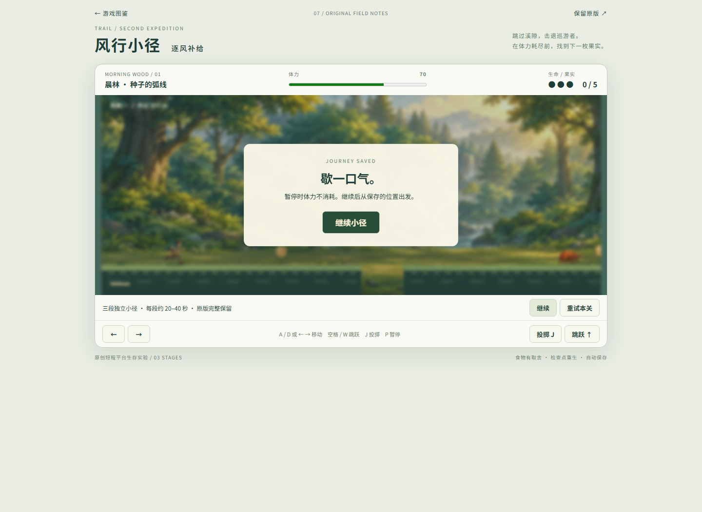
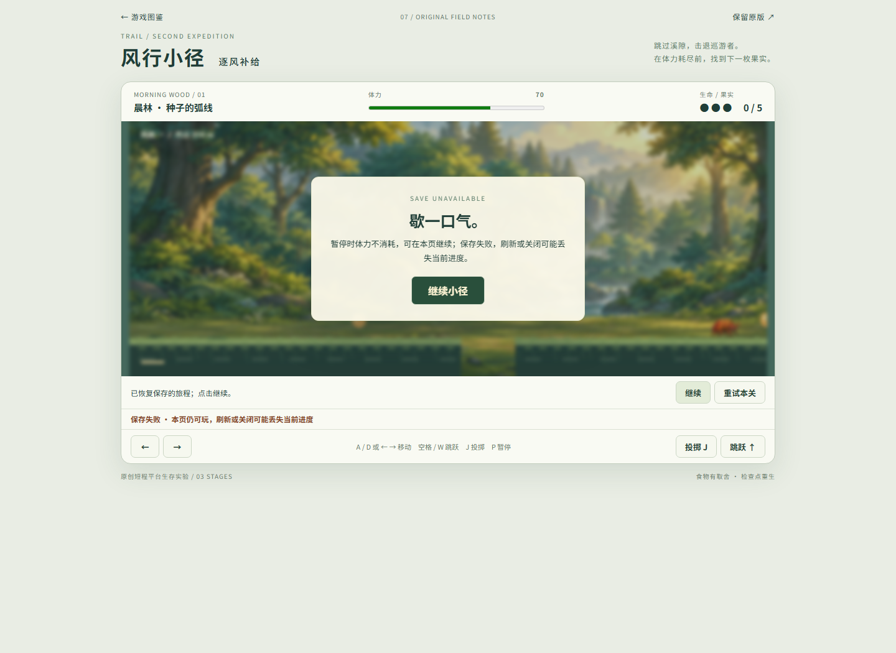
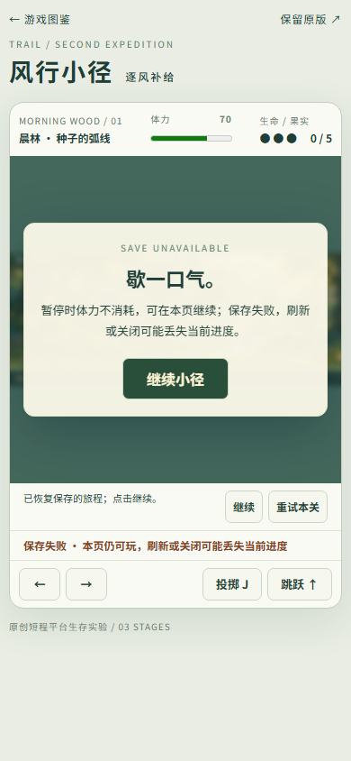

打开风行小径 v2 · 游戏图鉴写失败时，如实说明保存状态
2026-10-20。只修保存结果与提示，保留规则、关卡、难度、旧版本和存档格式。正常、写失败、坏档保护三种状态分开；仍可游玩，后续成功写入自动清除失败。
修复前图来自公开旧页面；修复后图来自localhost候选。故障为明确的Storage方法异常注入，坏档为隔离测试字符串，不称自然设备故障或普通通关实玩。28项VM控制器检查与4组真实浏览器流程分别记录。
完整方法、范围和未验项 · 本地浏览器原报告 · 公开旧版复现 · 控制器结果 · 保全记录
修复前 · 配额失败却称已保存
修复后 · 写失败暂停提示
390视口 · 状态行可见
写入恢复 · 暂停中自动清除失败坏档保护 · 不覆盖原始内容未验全关通关、实际磁盘配额耗尽、浏览器真实权限设置、真机触屏、声音、审美及长期保存。公开部署复验以最终交付回执为准。